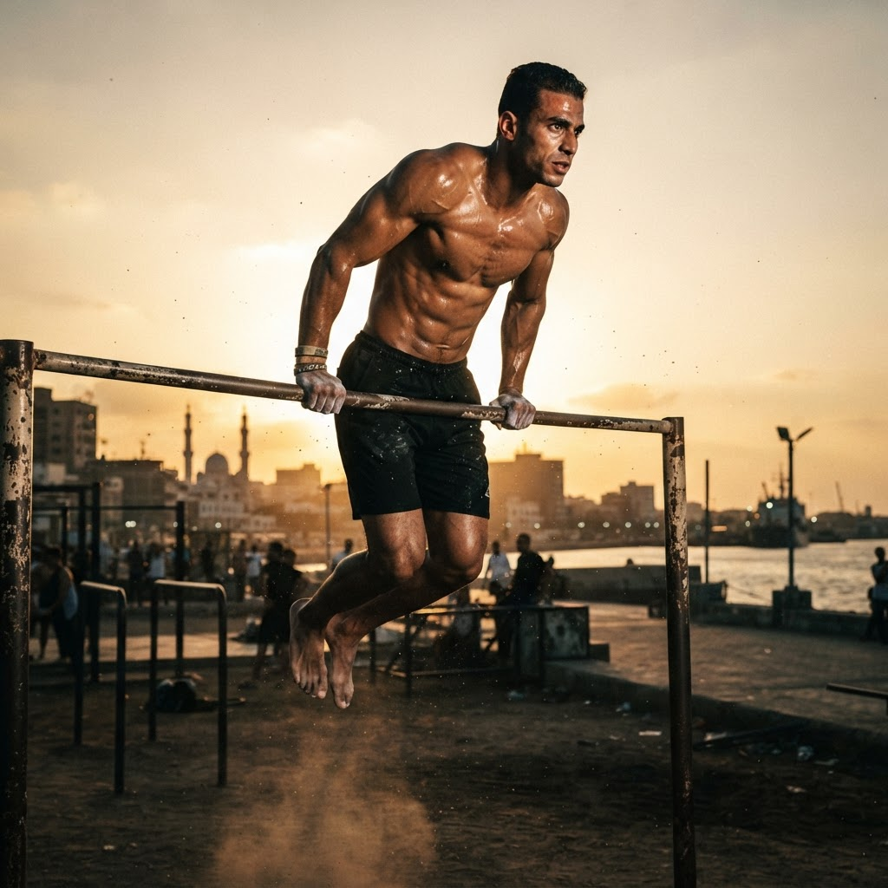

Intensive Care & Critical Care
Critical Care Excellence
Delivering high-acuity nursing care in the ICU: invasive hemodynamic monitoring, mechanical ventilation management, vasoactive drug titration, and round-the-clock vital stabilization.
ICU & CCU Ventilator Support Hemodynamics